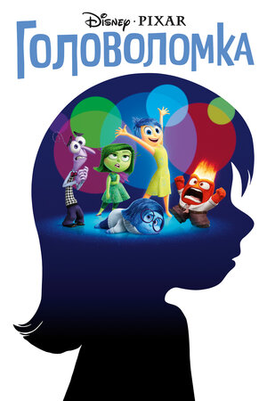
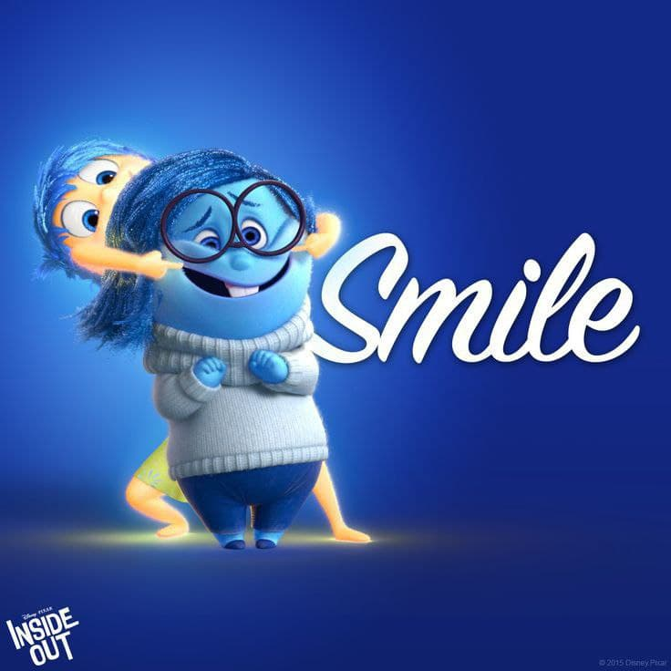

Головоломка (2015)
«Головоло́мка» (англ. Inside Out) — комедийно-драматический 3D-анимационный фильм студии Pixar. Премьера состоялась 18 июня 2015 года на кинофестивале в Каннах. Фильм основан на оригинальной идее Пита Доктера, режиссёра фильма, наряду с Ронни дел Карменом и продюсером Йонасом Риверой.
Как часто мы слышим в своей голове голоса, порой отдающие противоречивые команды. «Головоломка» пытается рассказать, что происходит. Мы знакомимся с 11-летней Райли, в чьей голове сосуществуют пять персонажей-эмоций: Радость, Печаль, Страх, Гнев и Брезгливость. Ежедневно цветные герои помогают девочке справляться с ее, пока еще пустяковыми проблемами. Но когда Райли переезжает жить в крупный город, разлад начинается еще и в ее голове.
Печаль (вторая базовая эмоция), не знающая своей роли, пытается изменить эмоциональную окраску ярких воспоминаний жизни из Миннесоты. Первичная базовая эмоция Райли — Радость — пытается не допустить этого. В результате конфликта они случайно выпадают из мозгового центра и вместе с базовыми воспоминаниями попадают в долговременную память. Лишившись этих эмоций, Райли впадает в апатию, и в структуре её личности начинаются разрушительные изменения.
В то же время Радость, прежде считавшая себя важнейшей эмоцией и высокомерно относившаяся к Печали, осознаёт, что невозможно управлять сложной жизнью человека в одиночку, и мирится с Печалью (тогда же выясняется и роль Печали — утешать Райли после неудач). Вернувшись в мозговой центр, Радость и Печаль восстанавливают с помощью глубинных воспоминаний (при этом Радость не только отдаёт воспоминания в руки Печали, но и впервые подпускает её к пульту управления) уже почти разрушенную структуру личности, в результате чего Райли, сбежавшая было из дома, возвращается обратно, мирится с родителями и налаживает свою жизнь.
…С момента тех событий прошёл год. Личность Райли становится сложнее и богаче, а воспоминания из однозначно одноцветных превращаются в разноцветные и приобретают оттенки благодаря тому, что каждая из эмоций теперь работает в паре с другой. В связи с этим в головном отделе устанавливают новый пульт управления. Райли снова идёт на хоккей и знакомится с мальчиком. В конце фильма демонстрируются эмоции остальных людей, а также животных.
СМОТРЕТЬ ТРЕЙЛЕР СМОТРЕТЬ МУЛЬТФИЛЬМ